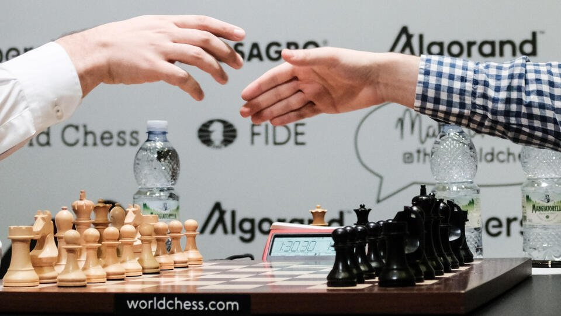

Чемпионат мира по шахматам проводится для определения чемпиона мира по шахматам.
Первым событием, признанным чемпионатом мира, стал матч 1886 года между двумя ведущими шахматистами мира, Вильгельмом Стейницем и Йоханнесом Цукертортом. Стейниц победил, став первым чемпионом мира. С 1886 по 1946 год чемпион устанавливал условия, требуя, чтобы любой претендент поднял значительную ставку и победил чемпиона в матче, чтобы стать новым чемпионом мира.
После смерти действующего чемпиона мира Александра Алехина в 1946 году, ФИДЕ (Международная шахматная федерация) взяла на себя управление чемпионатом мира, начиная с турнира чемпионата мира 1948 года. С 1948 по 1993 год ФИДЕ организовала серию турниров, на которых каждые три года выбирался новый претендент. В 1993 году действующий чемпион Гарри Каспаров вышел из состава ФИДЕ, что привело к появлению соперника, претендовавшего на титул чемпиона мира на следующие тринадцать лет. Титулы были объединены на чемпионате мира по шахматам 2006, и все последующие матчи вновь проводились ФИДЕ.
С 2014 года чемпионат проводится по двухлетнему циклу, хотя матчи 2020 и 2022 годов были перенесены на 2021 и 2023 соответственно из-за пандемии COVID-19.
1. Вильгельм Стейниц (Австро-Венгрия) 1886 – 1894
2. Эммануил Ласкер (Германия) 1894 – 1921
3. Хосе Рауль Капабланка (Куба) 1921 – 1927
4. Александр АЛЕХИН (Россия/Франция) 1927 – 1935, 1937 – 1946
5. Макс Эйве (Голландия) 1935 – 1937
6. Михаил БОТВИННИК (СССР) 1948 – 1957, 1958 – 1960, 1961 – 1963
7. Василий СМЫСЛОВ (СССР) 1957 – 1958
8. Михаил ТАЛЬ (СССР) 1960 – 1961
9. Тигран ПЕТРОСЯН (СССР) 1963 – 1969
10. Борис СПАССКИЙ (СССР) 1969 – 1972
11. Роберт Фишер (США) 1972 – 1975
12. Анатолий КАРПОВ (СССР) 1975 – 1985
13. Гарри КАСПАРОВ (СССР/Россия) 1985 – 2000
14. Владимир КРАМНИК (Россия) 2000 – 2007
15. Вишванатан Ананд (Индия) 2007 – 2013
16. Магнус Карлсен (Норвегия) 2013 - 2023
Михаил Чигорин был сильнейшим российским шахматистом XIX века и достойным соперником первого чемпиона мира в этом виде спорта Вильгельма Стейница, однако всего один неверный ход привел к роковой ошибке, которая не позволила ему стать новым обладателем этого титула. До встречи соперников в Гаване в 1892 году они уже сыграли друг против друга две партии по телеграфу, причем в обеих превзошел оппонента россиянин. Знаменитый матч игрался до 10 побед. Однако, если счет был бы 9:9, то необходимо было побеждать уже 12 раз. В 23-й партии счет был 9:8 в пользу Стейница, но у Чигорина были все шансы сравнять очки, так как он создал себе отличную позицию, но в решающий момент допустил ошибку. И Стейниц защитил свой титул, обыграв противника со счетом 10:8.

Легенда Кубы Хосе Рауль Капабланка был настоящим гением, в шахматы он начал играть уже в 4 года. До игры с Александром Алехиным лишь три раза сдавался противникам, став безоговорочным фаворитом мировых шахматных турниров. Знаменитое шахматное сражение двух титанов мысли состоялось в Буэнос-Айресе в 1927 году. Они сыграли 34 матча, что в те времена было абсолютным рекордом, который смогли побить только в 80-х. Турнир шел без перерыва, пока в последнем матче Алехин не почувствовал себя плохо и вынужден был взять небольшую паузу. Капабланка осознал, что не сумеет победить соперника и сдал последнюю партию в письме к Алехину, что сделало его чемпионом мира. На реванш кубинец так и не решился.

Матч между победителем турнира претендентов Михаилом Талем и чемпионом мира Михаилом Ботвинником прошел в Москве в 1960 году. До этого соперники ни разу не играли друг с другом. Турнир по регламенту состоял из 24 партий. Таль на протяжении первенства опережал по очкам соперника, однако в 21-й партии счет стал равный. В итоге Таль все равно одержал победу. На тот момент ему было всего 24 года. Таким образом, Таль стал самым молодым чемпионом мира по шахматам в истории. Ботвинник получил право на матч-реванш, который состоялся 12 мая 1961 года. Претендент на корону наконец обыграл соперника. Таль превзошел его только в пяти партиях из десяти.

В Рейкьявике в 1972 году прошел «матч столетия» между американским гроссмейстером Робертом Фишером и заслуженным мастером спорта СССР Борисом Спасским. Это было одно из самых волнительных и напряженных шахматных сражений в истории. Вокруг турнира развернулось несколько скандалов, и на шахматистов оказывали сильное давление, так как первенство состоялось во время холодной войны, став своего рода символом. По регламенту матч состоял из 24 партий. Для победы требовалось набрать 12,5 очков. D сражении двух умов одержал победу Фишер, так как у него было преимущество в виде ладьи против слона и проходящей пешки Спасского. Советский шахматист не пришел на последнюю партию, тем самым уступив противнику. О своем решении он сообщил Фишеру по телефону. Неофициальный матч-реванш, который прошел в 1992 году, Борис также проиграл Роберту. Фильм «Жертвуя пешкой» с Тоби Магуайром показал легендарное противостояние двух гроссмейстеров.

Матч между двумя гениальными советскими шахматистами Анатолием Карповым и Гарри Каспаровым начался в 1984 году, а закончился в 1985 году. Он считается самым длинным в истории. Шахматисты сражались за титул чемпиона мира, и никто не намерен был сдаваться. Соперники сыграли 48 партий, чем побили рекорд Алехина и Капабланки 1927 года. В ход игры из-за ее продолжительности пришлось вмешаться президенту Международной шахматной федерации. Счет на тот момент был 5:3 в пользу Карпова. У противников было 40 ничьих. Результаты матча объявили 15 февраля 1985 года во время пресс-конференции в столичной гостинице «Спорт». Не было победителей и проигравших, турнир закончился ничьей.

Китаец Дин Лижэнь победил россиянина Яна Непомнящего на тай-брейке матча за шахматную корону и стал 17-м чемпионом мира. В 14 партиях с классическим контролем времени шахматисты не выявили победителя (ничья 7—7). Противостояние перешло в тай-брейк. Три партии в рапиде завершились вничью. В четвертой Дин Лижэнь, игравший черными, победил после 68 ходов. Счет стал 2,5—1,5 в его пользу. Это первый чемпион мира из Китая. В декабре 2021 года, после победы в предыдущем матче, Магнус Карлсен заявил, что, возможно, откажется от защиты своего титула, объяснив это нехваткой мотивации, если только его соперником не будет Алиреза Фирузджа, который в 2021 году в возрасте 18 лет поднялся на второе место в мировом рейтинге[6]. В апреле 2022 года Карлсен дал дополнительные комментарии, заявив, что он вряд ли будет играть, при этом не упомянув ни одного потенциального соперника. 20 июля 2022 года Карлсен заявил, что отказывается от матча за титул чемпиона с Яном Непомнящим. По причине отказа действующего чемпиона мира от защиты своего титула, матч за звание чемпиона мира играли шахматисты, занявшие первое и второе места в турнире претендентов (Ян Непомнящий и Дин Лижэнь соответственно). Китайский шахматист не должен был играть на турнире претендентов, но получил шанс после дисквалификации россиянина Сергея Карякина. Непомнящему 32 года. Сейчас россиянин с 2795 очками занимает второе место в рейтинге Международной шахматной федерации (FIDE). Дин Лижэнь идет третьим (2788). Непомнящий побеждал на двух последних турнирах претендентов. В 2021 году спортсмен боролся за шахматную корону с Карлсеном и проиграл (3,5-7,5). Общий призовой фонд матча составил два миллиона евро. Дин Лижэнь за победу получил 1,1 миллиона, Непомнящий — 900 тысяч.